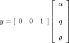
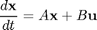
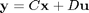
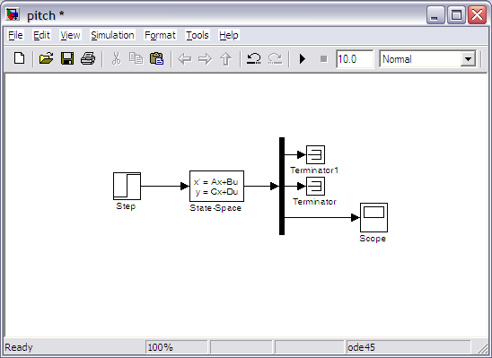
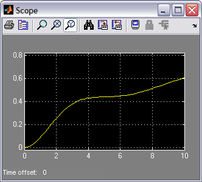
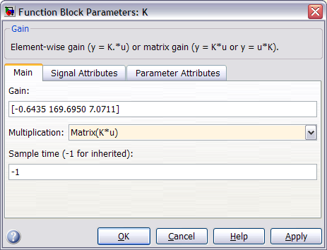
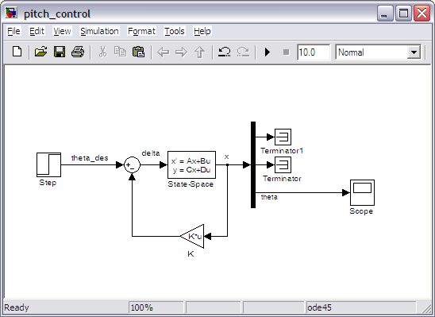

Aircraft Pitch: Simulink Modeling
Contents
Physical setup and system equations
The equations governing the motion of an aircraft are a very complicated set of six nonlinear coupled differential equations. However, under certain assumptions, they can be decoupled and linearized into longitudinal and lateral equations. Aircraft pitch is governed by the longitudinal dynamics. In this example we will design an autopilot that controls the pitch of an aircraft.
In this example we will simulate the linearized aircraft model with the state-feedback controller designed earlier in the example. We will specifically use the linearized state-space model obtained in Aircraft Pitch: System Modeling page. This model, with numerical values substituted in, is given below.
(1)![$$ \left [\begin{array}{c} \dot\alpha \\ \ \\ \dot q \\ \ \\ \dot\theta \end{array} \right] =
\left [\begin{array}{ccc} -0.313 & 56.7 & 0 \\ \ \\ -0.0139 & -0.426 & 0 \\ \ \\ 0 & 56.7 & 0 \end{array} \right]
\left [\begin{array}{c} \alpha \\ \ \\ q \\ \ \\ \theta \end{array}
\right]+\left [\begin{array}{c} 0.232 \\ \ \\ 0.0203 \\ \ \\ 0
\end{array} \right][\delta]$$](Content/AircraftPitch/Simulink/Modeling/html/AircraftPitch_SimulinkModeling_eq47223.png)
(2)
The above equations match the general, linear state-space form.
(3)
(4)
Building the state-space model
We will now build a Simulink model of the above equations. One option is to build a model of the plant with state-feedback that emulates the figure shown below.

We will, rather, employ the State-Space block made available in Simulink to model the open-loop plant. Specfically, follow the steps given below.
- Open Simulink and open a new model window.
- Insert a Step block from the Simulink/Sources library.
- To provide a appropriate step input at t=0, double-click the Step block and set the Step time to "0". Also set the Final value to "0.2" to represent the 0.2-radian reference we are assuming.
- Insert a Demux block from the Simulink/Signal Routing library. Double-click on the block and enter "3" for the Number of outputs; one output for each of the three state variables.
- Insert a Scope from the Simulink/Sinks library and connect the third output of the Demux block to the scope. We will only plot the third state variable which corresponds to the system's output which is the aircraft's pitch theta.
- Add Terminator blocks from the Simulink/Sinks library to the two signals of the Demux block that we are not plotting.
- Insert a State-Space block from the Simulink/Continuous library and connect the input to the Step block and the output to the Demux block.
- Double-click on the State-Space block and enter the system parameters as shown in the figure below.

Note, that in the above figure the C matrix is entered as a 3x3 identity matrix using the eye command rather than [0 0 1] as given in the original state-space equations. The reason for this is because in state-feedback control it is assumed that all of the state variables are measured, not just the output. If this is not the case, then an observer needs to be designed to estimate any state variables that are not measured. Refer to the Introduction: State-Space Methods for Controller Design page. for further detail.
When finished, the completed model should appear as shown below.

Generating the open-loop and closed-loop response
Next generate the open-loop step response by running the simulation (press Ctrl-T or select Start from the Simulation menu). When the simulation is finished, double-click on the Scope and scale the y-axis and you should be able to recreate the following figure.

This response is unstable and identical to that obtained within MATLAB in the Aircraft Pitch: System Analysis page. In order to view a stable response, we will now quickly add the state-feedback control gain K designed in the Aircraft Pitch: State-Space Methods for Controller Design page. Recall that this gain was designed using the Linear Quadratic Regulator method and resulted in a calculation of K = [-0.6435 169.6950 7.0711].
In order to add the state-feedback control to your model, follow the steps given below.
- Insert a Sum block from the Simulink/Math Operations library. Then double-click on the block and enter "|+-" for its List of signs where the symbol "|" serves as a spacer between ports of the block. Insert the block between the Step reference and the State-Space block.
- Insert a Gain block from the Simulink/Math Operations library. With the block selected, press Ctrl-I to flip the block. Then connect the output of the block to the "-" sign of the Sum block and the input to the output of the State-Space block by branching off the output signal by right-clicking on the existing line.
- Next double-click on the Gain block and enter the information as shown below. Specifically, enter the value for the matrix gain K and change the Multiplication setting to Matrix(K*u) as shown below.

Adding the appropriate labels will then leave you with the Simulink model shown below.

Next run the simulation by pressing Ctrl-T or selecting Start from the Simulation menu. When the simulation is finished, double-click on the Scope and press the autoscale button to recreate the following figure.

This response is identical to that obtained within MATLAB in the Aircraft Pitch: State-Space Methods for Controller Design page, where the state-feedback controller was designed.
If you would like to continue to develop and evaluate control algorithms for this system, you may continue on to the Aircraft Pitch: Simulink Controller Design page.